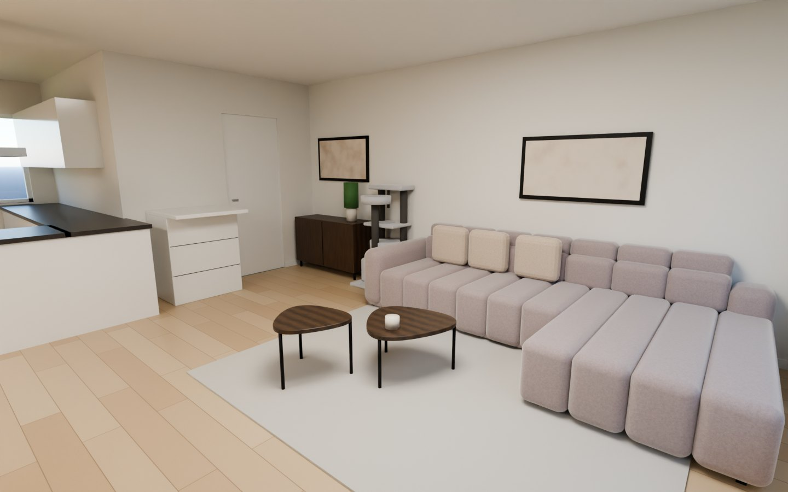
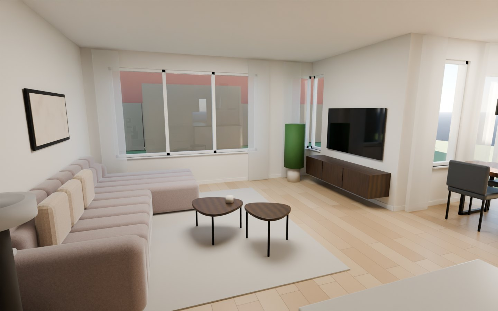
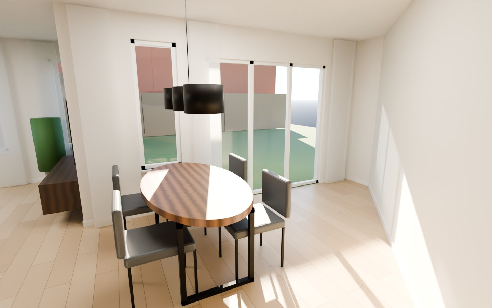
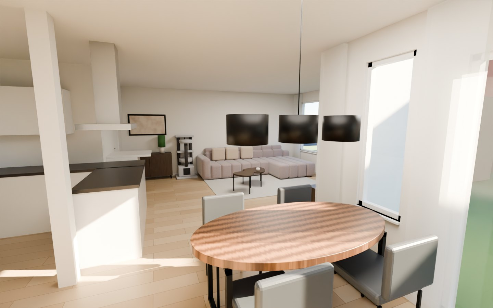

De bank staat met de rug tegen de linkerwand in de hoek, met de divan bij het raam. Daarachter kan de kat niet bij de bank. Op dezelfde wand staan de krabpaal, direct naast de armleuning, en een donkerbruin Bestå-dressoir bij de entree. Op de korte buitenmuur hangt een zwevend Bestå-tv-meubel in dezelfde kleur. De Budrio-salontafels staan voor de bank, en de witte Sundvik-ladekast staat tussen de entreedeur en de keuken, op de plek van het oude bureautje. In de eethoek staat de ovale James-tafel met de kop naar het raam en vier aangeschoven Monaco-stoelen. Daardoor blijft de hele strook voor de tuindeuren vrij.
Op de productfoto ‘Rechts’ en in de configuratietekening van Haco zit de divan rechts als je vóór de bank staat. Zit je erop, dan zit hij aan je linkerhand. Met de rug tegen de linkerwand kijk je naar de tv-muur, en dan zit je linkerhand aan de raamkant. De divan komt dus bij het raam zonder dat er iets gespiegeld hoeft te worden.
In de kamer: rug tegen de linkerwand, de armleuning richting de entree en het open einde van de divan richting het raam.
Check nog even op jullie orderbevestiging of daar ‘divan rechts’ staat met hetzelfde pictogram als op de site (artikel C0035131_2).
Zwarte maten zijn opgegeven (Binnenmaat-tekening, Haco, IKEA en Profijt Meubel). Maten met ≈ zijn geschat uit de Zibber-plattegrond of foto’s, ongeveer ±10 cm. De Budrio-tafels zijn organisch van vorm. Ik heb ze getekend binnen hun opgegeven maten (86 × 82 en 71 × 67), dus de contour is globaal.
Sleep of veeg om rond te kijken en scroll of knijp om in te zoomen. Klik op de pijlen op de vloer om naar een ander standpunt te lopen. De i-knopjes geven aan welk meubel je ziet. Elk standpunt is een 360°-render uit Blender (Cycles) op ooghoogte (1,50 m), met dezelfde maten als de plattegrond. Bankstof: Haco Amore taupe.




Gemaakt in Blender (Cycles, fysiek gebaseerd licht) met dezelfde maten als de plattegrond. De meubels zijn vereenvoudigde modellen op hun opgegeven maten. Ze lijken op de echte producten, maar het zijn geen exacte kopieën. De bank is opgebouwd naar de productfoto's van de Jet, in Haco Amore taupe. De wandkleur, de vloer (licht eiken zoals op de foto's), de hanglamp, de decoratie en de tuin zijn aannames. Ook de lichtinval is een aanname, want de ligging van de tuin ten opzichte van de zon is onbekend.
Sleep om rond te draaien, scroll of knijp om te zoomen. Dit is een maatvast blokkenmodel en geen fotorealistische render. De bank, de Bestå-meubels en de Budrio-tafels hebben hun opgegeven maten. De diepte van het zitgedeelte (≈105) en de breedte van de divan (≈120) heb ik afgeleid uit Haco’s bovenaanzicht. De tv is 65 inch (≈145 × 83). Plafondhoogte (260), vensterbank (≈65) en de krabpaal zijn aannames.
| Meubel | Maat (b × d × h) | Plek | Status |
|---|---|---|---|
| Haco Jet 2-zits + divan rechts | 325 × 174 × 82 | Rug tegen de linkerwand, 30 cm van de raamwand | gekocht |
| Budrio salontafelset, Ristretto baroque oak met zwart metalen onderstel (Profijt Meubel) | 86 × 82 × 39 71 × 67 × 44 | Voor het 2-zitsdeel, met de kleine tafel half over de grote | gekocht |
| BESTÅ tv-meubel met deuren, zwartbruin Hedeviken / donkerbruin eikenfineer (IKEA) | 180 × 42 × 38 | Zwevend op de korte buitenmuur, onderkant ±20 cm boven de vloer | voorstel |
| BESTÅ opberger met deuren, zwartbruin Hedeviken / Stubbarp / donkerbruin eikenfineer | 120 × 42 × 74 | Linkerwand, tussen de krabpaal en de hoek bij de entree | voorstel |
| SUNDVIK commode/ladekast, wit (IKEA) | 78 × 54–79 × 99–108 | Zuidwand tussen entreedeur en keuken, plek van het oude bureautje. Getekend met de maximale diepte van 79 cm | in bezit |
| Eettafel James, ovaal, mangohout walnoot, mat zwart metalen onderstel (AQ-Living) | 180 × 100 × 76 | Eethoek, haaks op de gevel met de kop 23 cm van het raam, midden op ≈ (570, 360) | aankoop |
| Eetkamerstoel Monaco antraciet, 6× (bol) | 53 × 62 × 87 · zit 48 | 4 aan tafel, 2 per lange zijde, aangeschoven. De andere 2 staan niet in de woonkamer | in bezit |
| Krabpaal Adori Savannah, lichtgrijs/donkergrijs (Pets Place) | 60 × 60 × 120–130 | Linkerwand, direct naast de armleuning, met de opening van het huisje naar de kamer | gekozen |
| Tv, 65 inch | ≈ 145 × 83 | Aan de muur boven het tv-meubel | advies |
De Budrio heeft een donkerbruin eikendecor met zwart metaal. De Bestå-variant ‘zwartbruin met Hedeviken donkerbruin gebeitst eikenfineer’ komt daar het dichtst bij: een donkere eikenfront op een zwartbruin frame. Het ene is fineer en het andere melamine, dus de tint zal niet precies gelijk zijn. Neem een foto van het tafelblad mee naar de winkel of leg een Hedeviken-deurtje ernaast.
Ik heb de staande versie van 120 × 42 × 74 op Stubbarp-poten getekend, want die hoeft niet aan de muur te hangen. Wil je het dressoir ook zwevend, zodat het bij het tv-meubel past, dan is er een kast van 120 × 42 × 64. Beide hebben dezelfde 120 × 42 voetafdruk, dus de plattegrond blijft gelijk.
Prijzen en uitvoeringen zag ik vandaag (27-10-2026) op ikea.com/nl. Volgens IKEA is het tv-meubel geschikt voor een tv tot 72 inch en draagt het bovenblad maximaal 30 kg. Of zwevend ophangen een aparte ophangrail vraagt, zegt de productpagina niet duidelijk. Kijk dat na in de montage-instructie. De draagkracht hangt af van de muur: een buitenmuur van steen is goed, maar gebruik pluggen die bij de muur passen.
De eethoek is een trapezium. Aan de gevel is hij 456 cm breed, maar door de schuine wand wordt hij richting de keuken steeds smaller. Er moeten drie routes vrij blijven: van de woonkamer naar de keuken (de ingang ligt naast de kolom), naar de tuindeuren, en terug naar de woonkamer. Met vier stoelen en zonder kopstoelen heb ik alle plekken en hoeken opnieuw doorgerekend. Het minst in de weg staat de tafel haaks op de gevel, met de kop naar het raam, aan de woonkamerkant van de eethoek. Het blok tafel plus stoelen is nu 146 cm breed in plaats van 330 cm in versie 4.
| Element | Maat / positie | Status | Bron |
|---|---|---|---|
| Woonkamer binnenmaat | 457 × 560 | bevestigd | Binnenmaat + Zibber |
| Korte buitenmuur rechts (tv-muur) | 247 | bevestigd | Binnenmaat |
| Groot raam in tuingevel | ≈ 40 → 325 vanaf linkerwand | geschat ±10 | Zibber, foto 642/645 |
| Hoekraam (gevel + zijkant) | ≈ 404 → 457 · zijkant ≈ 0 → 46 | geschat ±10 | Zibber, foto 581/642 |
| Radiator onder groot raam (oostdeel) | ≈ 235 → 320 | geschat | foto 581/642/645 |
| Radiator onder westdeel raam | niet te zien | onbekend | foto 642 |
| Deur naar entree (zuidwand) | ≈ 56 → 136 | geschat | Zibber, foto 644 |
| Draairichting die deur | niet te zien | onbekend | foto 644 |
| Kookeiland steekt woonkamer in | ≈ x 254 → 442 · y 493 → 557 | geschat | Zibber, foto 582/644 |
| Stroom / tv-aansluiting op de tv-muur | de tv stond daar al, dus waarschijnlijk wel | aanname | foto 581/642 |
| Plafondhoogte | niet opgegeven (3D gebruikt 260) | onbekend | – |